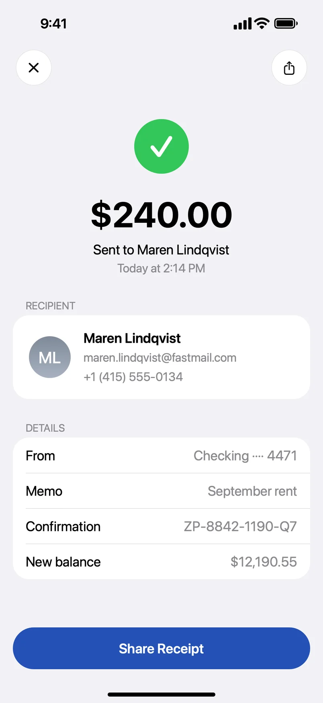
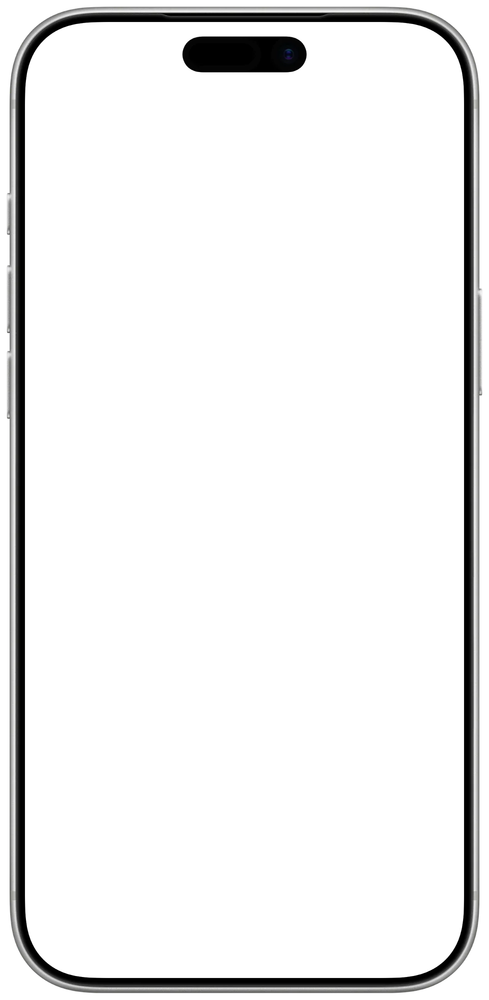

Share screenshots, not personal info.
SafeShot finds the personal details in a screenshot and covers them, on your iPhone. You review every mask, then share the copy.
Free, one screenshot a day. Requires iOS 27 and iPhone 15 Pro or later.


- Everything on your iPhoneThe analysis never leaves the device. No server, ever.
- No account, no analyticsNothing to sign up for. Nothing watching.
- Solid masks by defaultThe covered pixels are gone from the file you share.
- One purchase, no subscriptionPro is $14.99, once. Prices vary by country.
It finds what you would cover by hand. And what you would miss.
A chat you post to a group for advice. A boarding pass for a friend. An account page for a support ticket. Each one carries something the other person does not need, and it is rarely the part you were looking at.
-
A chat, for the group that asked
hey! are you still coming tonight?
yes!! what's the address again?
got it, can you send me Mia's number?
perfect, see you at 7
-
A boarding pass, for the friend picking you upNorthwind AirNW 1170SFO to LHRPassengerBooking refSeat14AGateB22Boards10:05Frequent flyer
-
An account page, for the support ticketFamily planNameEmailMember IDCardVisa ···· 4471Renews14 Oct 2026
On every screenshot
Pattern checks that run whether or not Apple Intelligence is on.
- card numbers
- IBANs
- phone numbers
- email addresses
- verification codes
- IP addresses
- map coordinates
In the picture
Image detection, for what is not text.
- faces
- QR codes
- barcodes
With Apple Intelligence
The model reads the screenshot for context, on the device, and catches what no pattern can describe.
- account balances
- names
- street addresses
- dates of birth
- usernames
- booking references
Three taps from the share sheet.
No import, no setup. SafeShot sits in the share sheet like any other app, and the editor opens on your screenshot with the work already done.
- Take a screenshot, tap Share, pick SafeShot.
Or open SafeShot and choose one from your library. Photos and Files work too.
- The editor opens with the details already covered.
Pattern checks and image detection run on every screenshot. With Apple Intelligence, SafeShot also reads the screen for context and finds the balance, the name, the address.
- Review, then share the copy.
Tap a mask to uncover it, hold to remove it, drag over anything it missed. The copy is a new image with the masks baked in and no location, capture date or device metadata.
33 seconds: a receipt, from Share to Save Image.
Every mask is a suggestion. You have the last word.
Automatic detection is never final. The editor is built for the second look, and it stays out of the way of the picture.
- Tap
- to uncover a mask and see what sits under it. Tap again to cover.
- Hold
- to remove a mask you do not want.
- Drag
- to cover anything SafeShot missed. Pull the corners to resize.
- Pinch
- to zoom in on the small print.
- Undo
- and redo every step, the style change included.
The status line counts what is covered. It never says the screenshot is clean, because no app can promise that.

Solid by default, because a blur can be undone.
Blurred and pixelated text can be recovered by re-rendering candidates and matching them against the output. A solid mask leaves nothing to match. SafeShot covers with solid masks unless you choose otherwise, and the style menu says so.
The style menu, word for word: "Blurred or pixelated details may still be recoverable."

The analysis stays on your iPhone.
SafeShot has no server, no account and no analytics. Here is where every byte goes.
- The screenshot
- SafeShot copies it into a protected temporary file when you open it and deletes the copy when the editor closes.
- The analysis
- Runs on the iPhone, with Apple Intelligence on the device. SafeShot never uses Private Cloud Compute.
- The copy
- A new image with the masks baked in. No location, capture date or device metadata from the original. It goes wherever you send it, through the system share sheet.
- After a share
- SafeShot saves the original screenshot and its masks to your own iCloud, so you can reopen a shared copy and edit it again. The developer cannot read it.
- Purchases
- Through the App Store and RevenueCat, the one third party the app talks to.
- Not collected
- No server of our own, no account, no analytics. The privacy policy says the same in full.
Free every day. Pro once.
One screenshot a day goes through the whole app, every feature included. Pro removes the daily limit, and that is the only thing it changes.
Free
- Automatic detection, Apple Intelligence included
- The full editor: tap, hold, drag, undo
- Solid, pixelate and blur
- Opens from the share sheet, Photos and Files
- No watermark
SafeShot Pro
- Everything in Free
- No daily limit
- No subscription, no renewal
- Yours on every iPhone signed in to your Apple Account
Bought inside the app. Prices vary by country.
Questions
Which iPhones does SafeShot run on?
SafeShot requires iOS 27 and an iPhone that supports Apple Intelligence, which is iPhone 15 Pro or later. The App Store only offers it to those models.
Does it work with Apple Intelligence turned off?
Yes. The pattern checks for card numbers, IBANs, phone numbers, email addresses and verification codes run on every screenshot, and so does the image detection for faces and QR codes. Apple Intelligence adds what only context reveals, such as a balance, a name, an address or a date of birth.
Does my screenshot leave my iPhone?
Not for the analysis. It runs on the device, and SafeShot never uses Private Cloud Compute. After a share, SafeShot saves the original screenshot and its masks to your own iCloud so you can reopen and edit a shared copy. The developer cannot read it.
What does the shared copy contain?
A new image with the masks baked in. The covered pixels are gone from the file, and there is no location, capture date or device metadata from the original.
Can a blurred or pixelated detail be recovered?
Sometimes, which is why solid is the default. Blurred and pixelated text can be matched against re-rendered candidates. A solid mask leaves nothing to match. The style menu warns about this.
Is there a subscription?
No. SafeShot is free with one screenshot a day, every feature included. SafeShot Pro removes the daily limit for a single purchase of $14.99. Prices vary by country.
How do I open a screenshot in SafeShot?
Take a screenshot, tap Share, pick SafeShot. It also opens images from Photos and Files, and you can choose one from the library inside the app.
Will it find everything?
No app can promise that, and SafeShot does not. It suggests masks, you review them, and the status line counts what is covered rather than declaring the screenshot clean. Drag a box over anything it missed.
Which languages does it speak?
Sixteen: Chinese (Simplified and Traditional), Danish, Dutch, English, French, German, Italian, Japanese, Korean, Norwegian, Portuguese, Russian, Spanish, Swedish, Turkish and Vietnamese. Apple Intelligence does not support every one of them yet. Where it does not, the pattern checks and image detection still run.
From the developer
I send screenshots all day. A receipt to prove a transfer went through, a chat to ask a friend what they would answer, a settings page to a support agent. Almost every one has something on it the other person does not need. Covering it by hand means the markup pen, a shaky rectangle and a second look I skip when I am in a hurry. No app can promise to remove all your private information, and that promise is what makes you send a screenshot without a second look. So SafeShot suggests, and you decide.
Vladimir KhuraskinIndependent developer. @vladeku on X.
Cover what you didn't mean to share.
Free, one screenshot a day. Requires iOS 27 and iPhone 15 Pro or later.